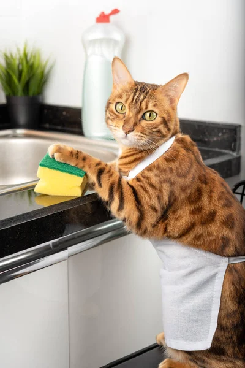

Tutorialy
Tutorial na čisté nádobí:
Nádobí jsi první opláchněte, poté vemte houbičku s pořádnou kapičkou mycího prostředku a můžete začít mydlit.
Když máte toto vše udělané, stačí nádobí osušit a uklidit do skříňky.
Pak si nadále můžete užívat čisté a lesklé nádobí.

Tutorial na domácnost bez prachu:
Prach je určitě odjakživa ten nejhorší záškodník, proto si na tento úklid udělejte více času, ale s výsledkem budete
určitě spokojeni. Na uklízení budete potřebovat mokrý hadřík, houbičku nebo cokoliv jiného a můžete hned začít.
Po nějaké době jsi hadřík vyperte a když to budete mít hotové, tak se můžete těšit na další uklízení.
Tutorial na voňavou toaletu:
Jak všichni víme, tak nikdo nemá rád zapáchající toalety, proto by jsme je měli, alespoň po sobě vyčistit.
Prostě jsi jednodnuše vezměte štětku na toaletu, která je vždy vedle toalety. WC pak jednoduše vyčistíte
můžete použít i voňavý sprej. Pak už na vás nikdo nemůže nadávat.